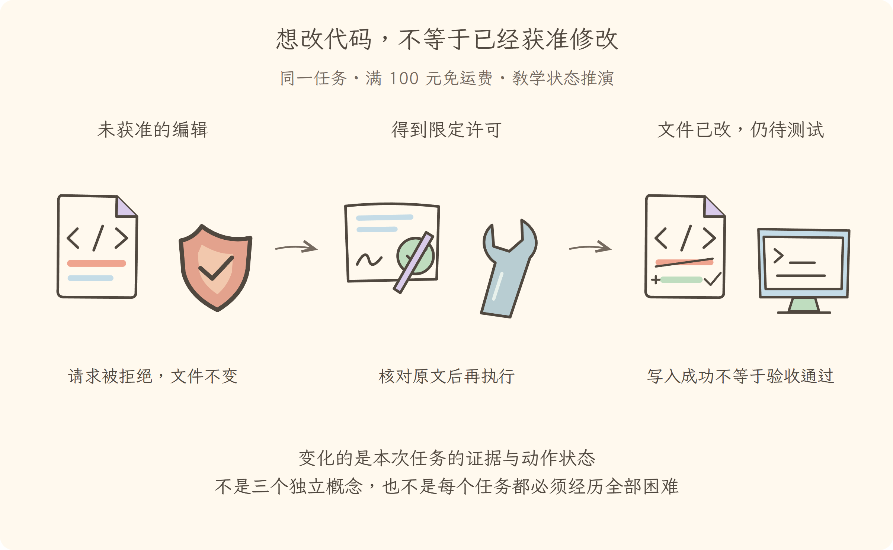

学习导航
第04讲 · 想改代码，不等于已经获准修改
源码基线：cd5ef8148158c3a752a658978873241fdf8e2bbc。业务案例为虚构 Java 运费服务；图与流程是教学推演，源码事实另有固定证据。
从这里接上
模型已经提出读代码或修改的请求。本讲要回答：想改代码，不等于已经获准修改？
上一讲解决了“能区分提示、历史、工具说明和实际工具结果”；这仍不能代替本讲要补的责任。
阅读与完成标准
先看逐步讲解，再做练习。视觉课件用于复习，词典随用随查，不要求先背英文。预计正文阅读 20–35 分钟，练习 10–20 分钟；这是安排建议，不是学会的证明。
读完应能解释：审批通过后，执行拒绝检查还需要保留吗？ 还要能预测：测试工具返回了结果，但进程退出码为 1，属于哪种失败？ 最后从源码证据定位相应责任。
现在必须懂的是本讲怎样改变证据或动作状态；具体框架中的其他选项知道存在即可，不用一次读完整个包。语法卡住可查补课 A、补课 B，工程定位查补课 C，看完返回此处即可。
本讲交接
拒绝、失败和成功分别形成真实结果；未授权不写入。但下一步还要解决：这次读到的证据，下次从哪里取。
← 第03讲：模型请求 · 第05讲：会话日志 →
视觉课件
第04讲 · 想改代码，不等于已经获准修改
源码基线：cd5ef8148158c3a752a658978873241fdf8e2bbc。业务案例为虚构 Java 运费服务；图与流程是教学推演，源码事实另有固定证据。
当前现场
模型已经提出读代码或修改的请求。固定业务约定不变：满 10000 分免运费；原实现在等于时返回 800。禁止用修改预期的方式让测试变绿。

三分钟复述
先描述左格缺什么，再说明中格采取的机制，最后指出右格新增了哪些证据或责任。拒绝、失败和成功分别形成真实结果；未授权不写入。不要只读图上的物件名；删掉中间这项机制，任务会在哪一步失去依据？
本讲最容易误会的是：测试工具返回了结果，但进程退出码为 1，属于哪种失败？ 可能是命令成功执行后测试断言失败，须看输出；不能把工具通道完成等同于业务通过。
从图返回源码
图只表达教学关联与状态变化，不代替完整调用顺序。源码定位提供实现或契约证据，正文解释映射和边界。
← 第03讲：模型请求 · 第05讲：会话日志 →
逐步讲解
第04讲 · 想改代码，不等于已经获准修改
源码基线：cd5ef8148158c3a752a658978873241fdf8e2bbc。业务案例为虚构 Java 运费服务；图与流程是教学推演，源码事实另有固定证据。
一、理解了原因，为什么编辑仍可能失败
第三讲把报告、约定和源码送到了模型。模型现在建议把严格大于改成大于等于。这个建议正确，也不代表当前工具一定可以写入：用户可能尚未授权，文件可能已变化，执行服务可能不可用。
Tool Call（工具调用请求）像一张施工申请单，写明动作与参数；Tool Result（工具结果）是系统尝试后给出的回执。申请单上写“修好了”不能让它自动变成回执。我们要跟的是实际执行路径。
三格为同一运费任务的教学状态变化或故障对照。图不是实际运行日志；关键区别见各格说明。
二、先问能不能做，再问怎样做
参数必须符合动作定义，工具必须在当前可见范围中存在，取消信号不能已经生效。通过这些检查后，执行前策略可以允许、拒绝，或请求一次审批。Approval（审批）是针对这次动作的裁决，不是给整个后续任务发一张无限通行证。
本项目还在可扩展执行前处理之后运行 Guard（执行拒绝检查）。它只有拒绝或不表态，没有“强制允许”的返回值。这样后面的检查不能撤销其他检查提出的拒绝。它解决的是拒绝约束不能被可重排的外围处理偷偷放开的风险。
不是每次读取都一定弹出审批框，也不是所有部署都自动懂得用户这句中文的权限范围；具体策略要由已装配的提供者执行。本书的教学执行器将“未授权不改”作为显式状态检查。
三、在源码里找到拒绝真正发生的位置
以下是固定提交中的定位片段（只保留本节要读的源码边界）：
const denialReason = decision.kind === 'allow'
? this.guardReason(exec)
: decision.reason
if (denialReason !== undefined) {
return await next({
kind: 'post-result',
exec,
result: this.materializeFinalResult({
content: [{ type: 'text', text: `Error: ${denialReason}` }],
isError: true,
error: { message: denialReason },
}),
})
}
if (this.callerCancelled(exec)) {
return await next({ kind: 'post-result', exec, result: toolAbortedBeforeDispatchResult() })
}
return await next({ kind: 'dispatch', exec })
前面的执行前裁决与审批给出 decision；这里在允许时继续做拒绝检查，并把 denialReason 作为是否进入工具主体的分界。只有没有拒绝且调用未取消，才进入 dispatch 分支。读到拒绝分支里的错误结果后，不能再把它描述成“工具主体已运行但结果不满意”。
审批解析 还说明一次允许与其他非授权结果怎样区分。没有可用审批通道不是默认允许。
四、拒绝、执行错误、测试失败不是一回事
| 场景 |
文件有没有改 |
可以得出什么 |
| 用户未授权，编辑被拒绝 |
不应修改 |
当前动作没有被允许 |
| 已允许，但编辑找不到原文 |
没有完成目标补丁 |
需要重读当前文件和匹配条件 |
| 测试命令已启动，断言失败 |
与编辑是否发生分开判断 |
执行通道工作了，但业务测试未通过 |
| 编辑成功，尚未运行测试 |
已改变 |
只能报告修改完成，不能报告验证通过 |
把所有负面结果都称为“模型失败”，会把排障方向带错。拒绝要处理权限或缩小动作；工具错误要查参数与环境；断言失败要回到业务证据。不能通过换一条不受检查的通道重试来“解决”拒绝。
五、回执还要经过整理与记录
工具主体前后还有可扩展处理和最终结果整理。外围处理可能替换或阻止内容，最终对外结果需要冻结、归一化，并与原调用对应。完整链路见 工具执行管线。
因此不要从某个内部函数打印了“成功”推断模型最终看到成功，也不要从模型最后一句话倒推系统实际执行过。应追到登记的最终结果和对应调用编号。
六、回到授权后的那一行
本书夹具只允许修正运费比较符号。读完最新源码、获得限定许可、应用匹配的补丁后，才进入重新测试。若文件在读取与编辑之间被别人改了，先重新读取，不能用旧材料覆盖新内容。
这一讲保证每一次动作都有真实回执。第五讲继续解决另一个缺口：这些回执怎样保留下来，让下一次模型请求知道已经做了什么，而不是从头猜一次。
← 第03讲：模型请求 · 第05讲：会话日志 →
练习与答案
第04讲 · 想改代码，不等于已经获准修改
源码基线：cd5ef8148158c3a752a658978873241fdf8e2bbc。业务案例为虚构 Java 运费服务；图与流程是教学推演，源码事实另有固定证据。
先作答，再展开
1. 解释机制
审批通过后，执行拒绝检查还需要保留吗？
查看解释与边界
需要。一次审批不强制覆盖其他执行约束；任一适用拒绝仍应阻止主体执行。 回到本例的 10000 分输入，把“想做”“做过”“有结果”分别说清。
2. 预测反例
测试工具返回了结果，但进程退出码为 1，属于哪种失败？
查看推演
可能是命令成功执行后测试断言失败，须看输出；不能把工具通道完成等同于业务通过。 不是所有停止都叫完成，不是所有模型可见文字都有权限。
3. 源码与图相互校验
打开本讲定位，找到正文强调的分支或契约。遮住图中文字，解释左、中、右三格分别表示什么；指出图省略了哪一项实现细节。
参考核对方式
源码应支持本讲讲解的机制，而不是声称原仓库有运费业务。左格是“模型已经提出读代码或修改的请求”，右格是“拒绝、失败和成功分别形成真实结果；未授权不写入”。图中物件不是对象类的完整结构，也没有证明真实工具已执行；按正文的失败边界解释即可。若图无法表达这个区别，应修改图，不是给它增加一段英文标签。
← 第03讲：模型请求 · 第05讲：会话日志 →
分享稿
第04讲 · 想改代码，不等于已经获准修改
源码基线：cd5ef8148158c3a752a658978873241fdf8e2bbc。业务案例为虚构 Java 运费服务；图与流程是教学推演，源码事实另有固定证据。
用自己的话讲给同事
我们还在查同一个 Java 运费问题：满 100 元应免运费，恰好边界却收了 8 元。走到本讲，已有条件是：模型已经提出读代码或修改的请求。
如果不补这一层，会遇到的问题是：审批通过后，执行拒绝检查还需要保留吗？ 需要。一次审批不强制覆盖其他执行约束；任一适用拒绝仍应阻止主体执行。 所以本讲新增的不是要背的名词，而是任务中一项明确的责任。
现在能做到：拒绝、失败和成功分别形成真实结果；未授权不写入。但还要守住反例：测试工具返回了结果，但进程退出码为 1，属于哪种失败？ 可能是命令成功执行后测试断言失败，须看输出；不能把工具通道完成等同于业务通过。
请结合本讲图说出变化，再指向源码；不要宣称这段教学推演就是实际模型日志。下一讲顺着“这次读到的证据，下次从哪里取”继续。
术语词典
第04讲 · 想改代码，不等于已经获准修改
源码基线：cd5ef8148158c3a752a658978873241fdf8e2bbc。业务案例为虚构 Java 运费服务；图与流程是教学推演，源码事实另有固定证据。
词典用于回查，正文在首次使用处解释。代码、参数与路径保留原拼写；产品名称不逐字翻译。模型上下文和插件上下文不是一回事。
Tool Call（工具调用请求）
模型提出的动作与参数，像施工申请单。它表示想做什么；审批拒绝后不能声称动作已经发生。
Tool Result（工具结果）
执行系统返回的回执，包含成功内容或失败原因。回执可能说明“命令运行了但测试失败”，所以工具通道成功不等于业务成功。
Approval（审批）
对具体动作是否允许的裁决，像只准修这处边界的施工许可。许可不授权删测试或顺便改其他业务，也不能保证工具一定执行成功。
Guard（执行拒绝检查）
执行前只负责提出拒绝的检查，像门口最后一道禁止通行检查。它能拒绝或不表态，不能强行推翻已有拒绝来批准动作。
核对来源
本讲源码定位与完整正文。本例报告和金额属于教学夹具，不来自这份上游源码。